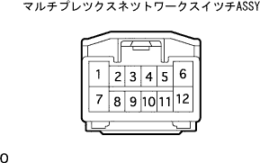
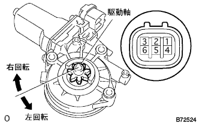
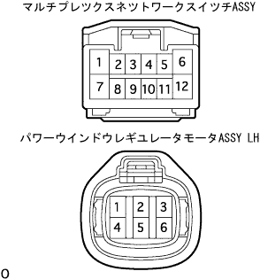

Power window system cannot be operated with regulator switches in passenger seats |
reference)| Step 1 | Fuse inspection |
Check if FL Door 20a is normal.
|
| ||||
| OK | |
| Step 2 | Power window master switch operation inspection |
Make sure that the master switch can operate the driver's seat and remote the passenger seat.
| A | B | C |
|---|---|---|
| I can't operate the driver's seat | The passenger seat can be remotely operated | The passenger seat remote cannot be operated |
|
| ||||
|
| ||||
| C | |
| Step 3 | Multiplex network switch ASSY inspection |
Power supply voltage inspection
Disconnect the connector of Multi -Plecs Netsu Work Sweet Titsu ASSY.
|  |
Use SST (Toyota Electrical Tester) to check the voltage between the switch vehicle side connector 12 (B) terminal ← → body earth.
|
| ||||
| OK | |
| Step 4 | Multiplex network switch ASSY inspection |
GND inspection
Cut the connectors of the multi -plattskusnett worksuit.
Use SST (Toyota Electrical Tester) to check the conversation between the switch vehicle side connector 7 (GND) terminal ← → body earth.
|
| ||||
| OK | |
| Step 5 | Power window regulator motor ASSY LH single inspection |
Power Wind Uleggian Uraleta Motor ASSY LH Operation Inspection
|  |
When the cross voltage is applied to each connector terminal, check that the motor operates smoothly.
| Measurement conditions | Direction of operation |
|---|---|
| Battery Plus ← → 3 terminals Battery minus ← → 1 terminal | Round right to the drive axis |
| Battery Plus ← → 1 terminal Battery minus ← → 3 terminals | Left rotation to the drive axis |
PTC (Power window motor protection function) operation inspection
Set the SST (Toyota Electrical Tester DC400A Prove) on the wire harness of one terminal of the connector of the passenger seat Power Wind Ulegi Motor.
The passenger seat door glass is fully closed.
After about 60 seconds, when the passenger seat power window switch is continued to be operated on the UP again (first time), check the time until the current of the motor changes from about 16-34A to 1A or less.(Inspection inspection)
About 60 seconds after the inspection, operate the passenger seat power window switch to confirm that the door glass descends.(Return inspection)
|
| ||||
| OK | |
| Step 6 | Wire harness inspection |
|  |
Disconnect the connector of the multi -kusnetsu to work that the seaweed and the power window leaguyer motor ASSY LH.
Use SST (Toyota Electrical Tester) to inspect the conversation between each terminal of the vehicle connector.
| Terminal number (Switch ← → motor) | standard |
|---|---|
| 6 (U) ← → 2 (U) | There is an conductor |
| 1 (D) ← → 1 (D) | There is an conductor |
|
| ||||
| OK | ||
| ||